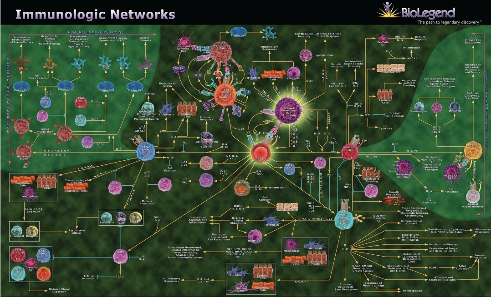
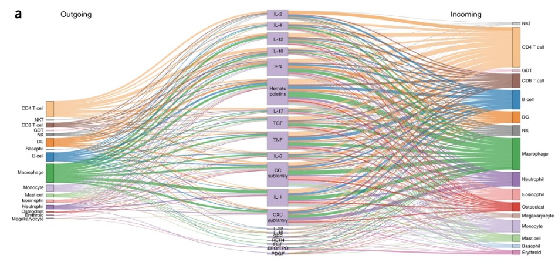
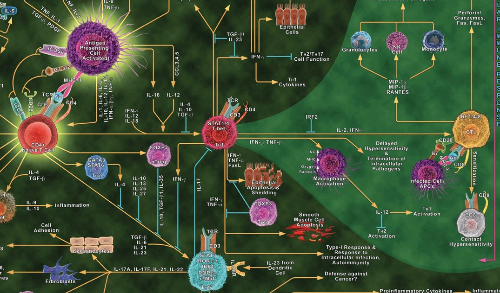

The value of domain expertise
Back in 2016, Jeremy Howard and I founded the research lab fast.ai. At the time, deep learning (the technique behind recent advances in AI) was the purview of a small and homogeneous handful of practitioners. The standard approach was to have computer science PhDs tackle problems in domains they had little familiarity with.
Jeremy and I proposed an ambitious idea–we wanted to teach people from all domains and backgrounds to be able to use deep learning. We weren’t even sure if our goal was possible. However, our online course became one of the most popular deep learning courses in the world, and members of the fast.ai community went on to join top research labs and major tech companies, win competitions against Google, and launch their own startups.
A core part of our mission was the belief that the people closest to a topic best understand the problems in that area and are best equipped to address them. I’m now one of those people in another domain, as I have immersed myself in the field of immunology. I am particularly interested in studying the intersection of immunology and AI. In this 2-part series, I will share some exciting research at this intersection.
A Most Complicated System
The immune system is even “more complicated than the human genome,” says John Tsang, a professor at Yale School of Medicine. One component of this complexity is the complicated network by which immune cells communicate with one another via protein messengers known as cytokines.

Immune cell communication through cytokines is a key area for us to better understand medicine and disease. Various immune cell types must communicate to coordinate their response to threats. However, the immune system may end up over-reacting, under-reacting, or having a misplaced reaction, all of which can cause disease. Sepsis occurs when the immune system responds too vigorously, damaging our own organs. In cancer, the immune system may under-respond, failing to attack cancerous cells that it should. Several types of cancer therapies involve trying to activate or reactivate our own immune cells. In other cases, the immune system mistakenly attacks our own tissue, causing autoimmune diseases including Type 1 diabetes, rheumatoid arthritis, multiple sclerosis, and psoriasis.
Recent research, drawing on a blend of immunology, mathematics, and natural language processing (NLP) AI, is helping us better understand immune cell-cytokine networks. I have a PhD in math, taught a masters course in NLP, and now study immunology, so I have a particular interest in this work. Understanding how the immune system is communicating and coordinating is necessary for knowing why and how the immune response can go awry.
How Immune Cells Communicate
There are dozens of types of immune cells. The main way that immune cells communicate and coordinate with each other is by sending small protein messengers known as cytokines. There are hundreds of types of cytokines. A single cytokine can have different effects on different cell types. The impact of a cytokine depends on the type of cell sending it, the type of cell receiving it, and the state of the cell. This makes interpreting immune responses challenging!
Cytokine-based therapies are used to treat some diseases, including cancer and autoimmune disorders. The interactions between cells and cytokines form complex networks, which are not fully mapped.
Note: You may have heard the term “cytokine storm” in the news during early coverage of covid (other diseases and some medical treatments can lead to cytokine storms as well). A cytokine storm occurs when the immune system reacts too vigorously, sending tons of messages and ramping up its inflammatory response to a level that is dangerous to the patient. The double-edged nature of the immune system is part of what piqued my interest about the topic.
NLP for Cell-Cytokine Interactions
Language models such as ChatGPT are part of the active field Natural Language Processing (NLP). NLP applies data science and machine learning to collections of text documents. At fast.ai, Jeremy Howard, Sylvain Gugger, and I developed a course on NLP in 2019, teaching cutting edge techniques like transformers, which are now used in ChatGPT and other popular models.
One paper in immunology is published every 30 minutes! That is a lot of immunology papers, and NLP techniques can be used to help synthesize this huge quantity of information. While models like ChatGPT are trained using a huge variety of texts scraped from the internet, immune-focused work may focus on a more specific group of documents, such as PubMed abstracts. A computer program called ImmuneXpresso was developed to text-mine the 16 million abstracts available on PubMed and create triples containing a cell type, cytokine, and whether the relationship was in-coming or out-going (i.e. if the cell was sending or receiving the cytokine).

The above figure from the ImmuneXpresso paper shows some of the information flow. Each family of cytokines shown contains multiple cytokines, and each family of cells contains multiple sub-types. The researchers relied on sentence syntax to parse these relationships, and captured associations with 188 diseases. A machine learning classifier was used to predict whether the data captured were related to cell-cytokine relationships. Over 4,000 directional cell–cytokine interactions were documented via this process. The authors experimentally tested two interactions that were predicted, but are not well-established in the literature, and validated that they hold true.
A famous data scientist turns to immunology
Jeff Hammerbacher created and led the data team at Facebook in 2006-2008 and was a founder of the successful cloud computing company Cloudera. A decade ago he made a similar pivot to the one I am currently attempting, starting his own immunology lab at Mt. Sinai and later the Medical University of South Carolina. He has applied machine learning to a variety of immunology problems, including predicting surgery outcomes, designing cancer vaccines, and starting a data science focused drug-discovery firm.
Hammerbacher, together with Ed Czech, tackled the problem of using NLP to extract cell type-cytokine relationships. To give an example of the type of problems that must be addressed in NLP, “Th1 (CD4+IL-17-IFN-γhi) cells” is referring to the same cell type as “helper CD4+IL-17-IFN-γhi type 1 cells.” Expert knowledge must be encoded in how to properly parse and categorize cells, knowing when two different strings refer to the same cell type and when they are different.

They compared two different deep learning models. In one case, they used a generative model with weak supervision, which allowed for them to begin with a smaller labeled dataset to generate labels for previously unlabeled data. In the other case, they used a language model (SciBERT) which had been pre-trained on scientific texts, and then they fine-tuned it for the specific PubMed immunology articles they were using. This is an example of transfer learning, a technique in which a machine learning model trained on a large dataset can be customized for use on a much smaller dataset. Transfer learning has been a central part of the fast.ai approach from the start, and was a key technique I featured in my keynotes at JupyterCon 2017 and SciPy 2019.
As part of Czech and Hammerbacher’s research, they created a database of T-cell specific cytokines and transcription factors, including relationships between 75 cell types, 262 cytokines, and 382 transcription factors. Their work was distinctive for having a tiny team (just 2 people, compared to 16 authors and 11 annotators for ImmuneXpresso), using 53k full-text documents (rather than solely abstracts), and focusing more narrowly on T-cells (as opposed to all immune cells). Techniques such as transfer learning are powerful in that they allow small teams of researchers to leverage previous models via fine-tuning. In addition to the paper, Hammerbacher shared about this work in a talk he gave at the Allen Institute for AI.
Stay Tuned
Stay tuned for part 2 of this series, which will cover more fascinating research about how immune cells communicate. You can subscribe to be notified of new blog posts by submitting your email below:
I look forward to reading your responses. Create a free GitHub account to comment below.